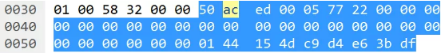

Exploiting Deserialization
To exploit a deserialization vulnerability we need two key things:
- An entry point that allows us to send our own serialized objects to the target for deserialization.
- One or more code snippets that we can manipulate through deserialization.
Entry Points
We can identify entry points for deserialization vulnerabilities by reviewing application source code for the use of the class ‘java.io.ObjectInputStream’ (and specifically the ‘readObject’ method), or for serializable classes that implement the ‘readObject’ method. If an attacker can manipulate the data that is provided to the ObjectInputStream then that data presents an entry point for deserialization attacks. Alternatively, or if the Java source code is unavailable, we can look for serialized data being stored on disk or transmitted over the network, provided we know what to look for!

The Java serialization format begins with a two-byte magic number which is always hex 0xAC ED. This is followed by a two-byte version number. I’ve only ever seen version 5 (0x00 05) but earlier versions may exist and in future later versions may also exist. Following the four-byte header are one or more content elements, the first byte of each should be in the range 0x70 to 0x7E and describes the type of the content element which is used to infer the structure of the following data in the stream. For more details see Oracle’s documentation on the Object Serialization Stream Protocol. When that is base64 encoded it comes out as “rO0…”. Keep an eye open for those two strings.
People often say to look for the four-byte sequence 0xAC ED 00 05 in order to identify Java serialization, and in fact some IDS signatures look for this sequence to detect attacks. During my recent client engagement I didn’t immediately see those four bytes because the target client application kept a network connection to the server open the entire time it was running and the four-byte header only exists once at the very beginning of a serialization stream. The client’s IDS missed my attacks for this reason – my payloads were sent later in the stream and separately from the serialization header.
We can use an ASCII dump to help identify Java serialization data without relying on the four-byte 0xAC ED 00 05 header.

The most obvious indicator of Java serialization data is the presence of Java class names in the dump, such as ‘java.rmi.dgc.Lease’. In some cases Java class names might appear in an alternative format that begins with an ‘L’, ends with a ‘;’, and uses forward slashes to separate namespace parts and the class name (e.g. ‘Ljava/rmi/dgc/VMID;’). Along with Java class names, there are some other common strings that appear due to the serialization format specification, such as ‘sr’ which may represent an object (TC_OBJECT) followed by its class description (TC_CLASSDESC), or ‘xp’ which may indicate the end of the class annotations (TC_ENDBLOCKDATA) for a class which has no super class (TC_NULL).
Having identified the use of serialized data, we need to identify the offset into that data where we can actually inject a payload. The target needs to call ‘ObjectInputStream.readObject’ in order to deserialize and instantiate an object (payload) and support property-oriented programming, however it could call other ObjectInputStream methods first, such as ‘readInt’ which will simply read a 4-byte integer from the stream. The readObject method will read the following content types from a serialization stream:
0x70 – TC_NULL
0x71 – TC_REFERENCE
0x72 – TC_CLASSDESC
0x73 – TC_OBJECT
0x74 – TC_STRING
0x75 – TC_ARRAY
0x76 – TC_CLASS
0x7B – TC_EXCEPTION
0x7C – TC_LONGSTRING
0x7D – TC_PROXYCLASSDESC
0x7E – TC_ENUM
Others for reference:
0x77 -- TC_BLOCKDATA
0x7A -- TC_BLOCKDATALONG
In the simplest cases an object will be the first thing read from the serialization stream and we can insert our payload directly after the 4-byte serialization header. We can identify those cases by looking at the first five bytes of the serialization stream. If those five bytes are a four-byte serialization header (0xAC ED 00 05) followed by one of the values listed above then we can attack the target by sending our own four-byte serialization header followed by a payload object.
In other cases, the four-byte serialization header will most likely be followed by a TC_BLOCKDATA element (0x77) or a TC_BLOCKDATALONG element (0x7A). The former consists of a single byte length field followed by that many bytes making up the actual block data and the latter consists of a four-byte length field followed by that many bytes making up the block of data. If the block data is followed by one of the element types supported by readObject then we can inject a payload after the block data.
I wrote a tool to support some of my research in this area, SerializationDumper, which we can use to identify entry points for deserialization exploits. The tool parses Java serialization streams and dumps them out in a human-readable form. If the stream contains one of the element types supported by readObject then we can replace that element with a payload object. In this example the stream contains a TC_BLOCKDATA followed by a TC_STRING which can be replaced with a payload.
Objects in a serialization stream are instantiated as they are loaded, rather than after the entire stream has been parsed. This fact allows us to inject payloads into a serialization stream without worrying about correcting the remainder of the stream. The payload will be deserialized and executed before any kind of validation happens and before the application attempts to read further data from the serialization stream.
POP Gadgets
Having identified an entry point that allows us to provide our own serialized objects for the target to deserialize, the next thing we need are POP gadgets. If we have access to the source code then we can look for ‘readObject’ methods and code following calls to ‘ObjectInputStream.readObject’ in order to work out what potential gadgets exist.
Often we don’t have access to application source code but this doesn’t prevent us from exploiting deserialization vulnerabilities because there are lots of commonly used third-party libraries that can be targeted. Researchers including Chris Frohoff and Gabriel Lawrence have already found POP gadget chains in various libraries and released a tool called ‘ysoserial‘ that can generate payload objects. This tool greatly simplifies the process of attacking Java deserialization vulnerabilities!
There are a lot of gadget chains included in ysoserial so the next step is to work out which, if any, can be used against the target. Background knowledge about the third-party libraries used by the application, or an information disclosure issue, should be the first port of call. If we know which third-party libraries are used by the target then we can select the appropriate ysoserial payload(s) to try. Unfortunately this information might not be readily available in which case we can, with caution, cycle through the various ysoserial gadget chains until we find one we can use. Care should be taken with this approach as there is always a risk of triggering an unhandled exception and crashing the target application. The target would have to be particularly unstable for this to happen, however, as even an nmap version scan would likely cause the target to crash if it couldn’t handle unexpected/malformed data.
If the target application responds to a ysoserial payload with a ‘ClassNotFoundException’ then chances are that the library targeted by the chosen gadget chain is not available to the target application. A ‘java.io.IOException’ with the message ‘Cannot run program’ likely means that the gadget chain worked, however the operating system command that the gadget chain attempted to execute was not available on the server.
The ysoserial command execution payloads are blind payloads and the command output is not returned. There are also a couple of limitations due to the use of ‘java.lang.Runtime.exec(String)’. The first is that shell operators such as output redirection and piping are not supported. The second is that parameters to the payload command cannot contain spaces (e.g. we can use “nc -lp 31313 -e /bin/sh” but we can’t use “perl -e ‘use Socket;…'” because the parameter to perl contains a space). Fortunately there’s a nice payload encoder/generator available online which can get around these limitations here: http://jackson.thuraisamy.me/runtime-exec-payloads.html.